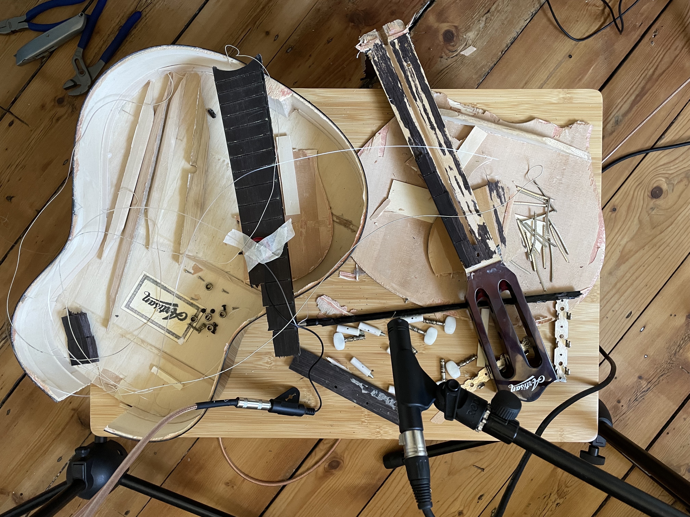
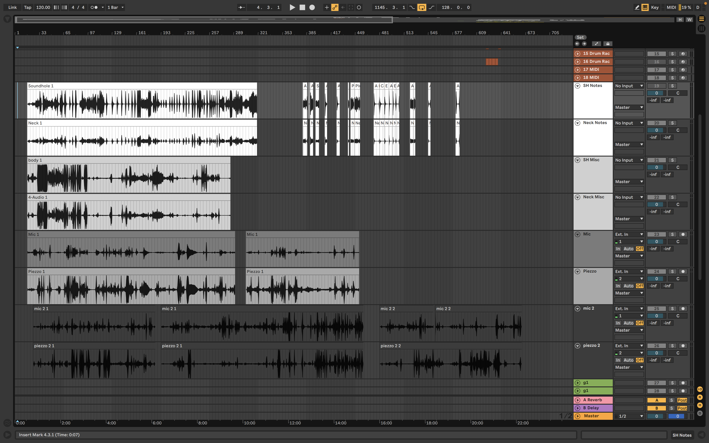
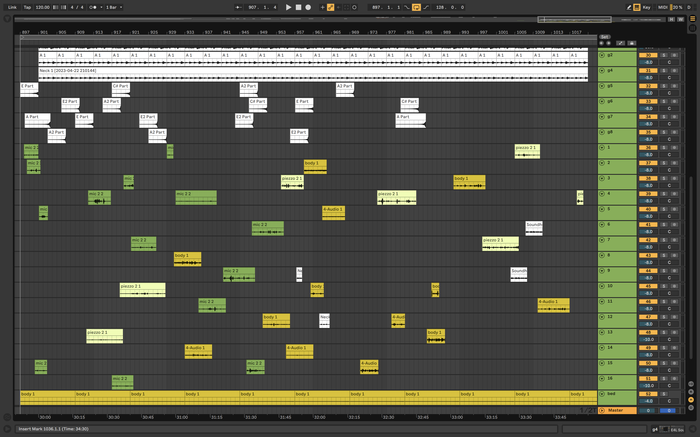
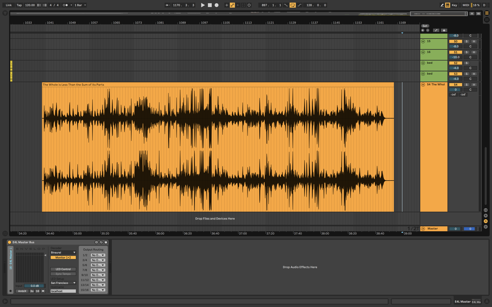
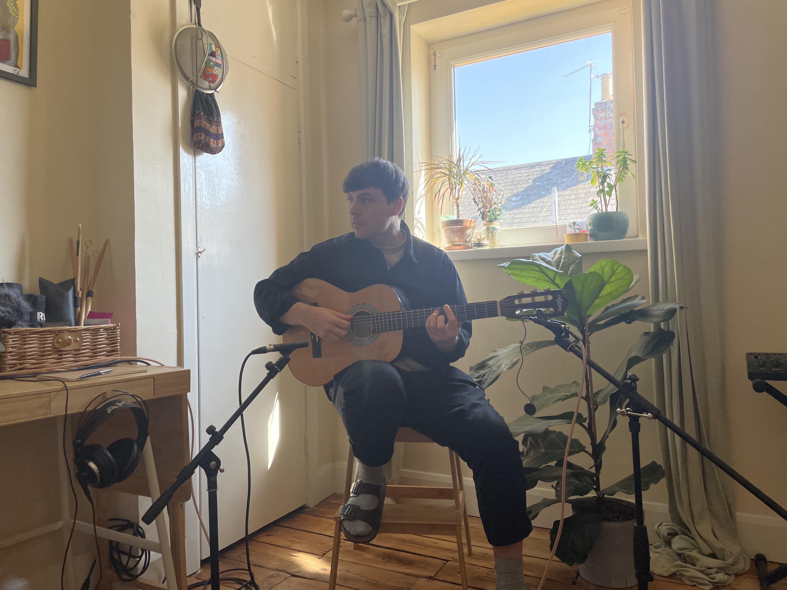
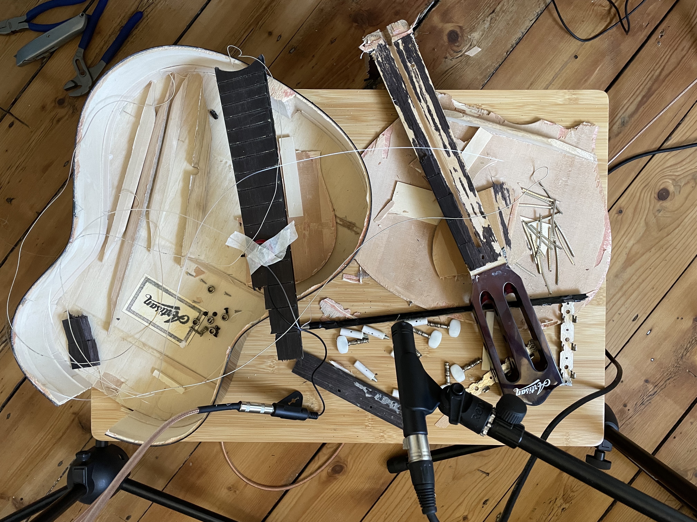
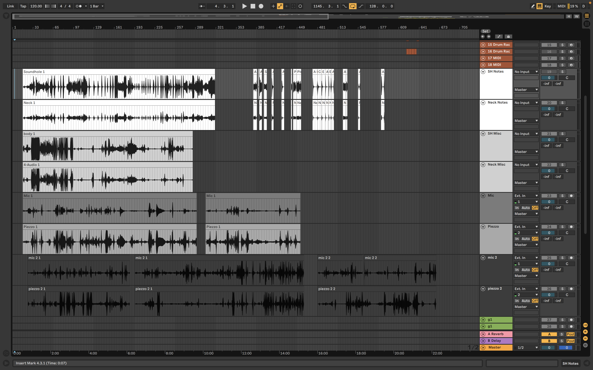
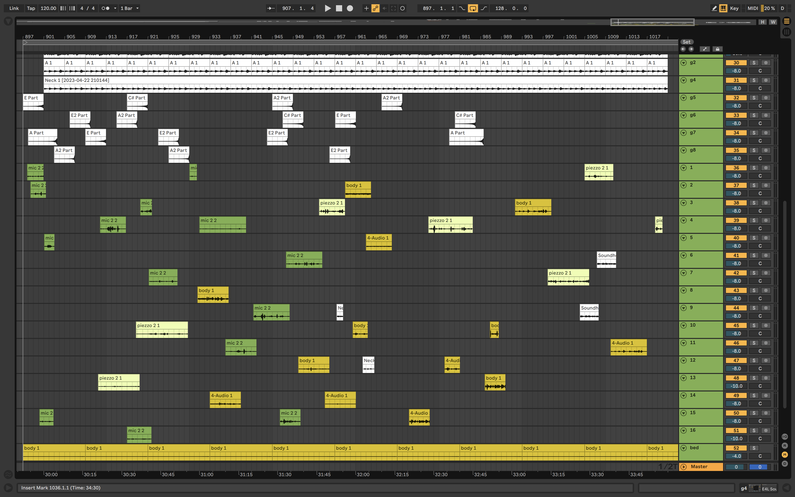
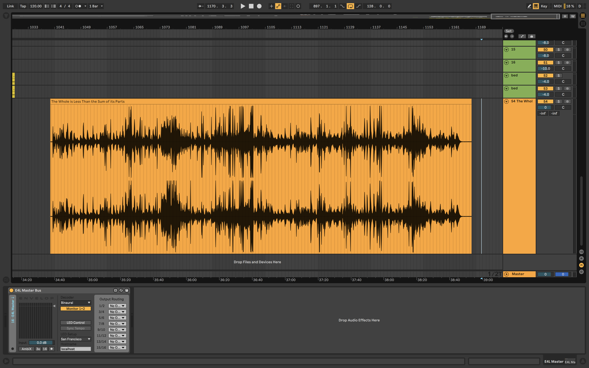

[Performance with guitar]

[Before disassembly]

[Performative disassembly]

[After disassembly]

[Recorded audio]

[Reassembly of audio]

[Completed song as a new 'whole']
Practicing Scales is a practice-based research project that explores the theoretical frameworks of subscendence through music performance and spatial audio composition, utilising the disassembly and reassembly of musical ‘objects’ as a method for investigation. By examining the interplay between music-related 'wholes' and 'parts,' the project aims to demonstrate the fluidity of boundaries and the entanglement of elements in the process of music creation.
Keywords:
Subscendence, Agency, Spatialisation, Scales, Performance, Disassembly.
Presented at Everyday is Spatial (2023), the spatial audio conference at the University of Gloucestershire.
---
Introduction
This is the research narrative produced in conjunction with a music project which consisted of a series of creative experiments and resulted in a single audio output. Combined, these form the practice research project, Practicing Scales.
The project was inspired by Timothy Morton’s notion of subscendence, which was explored through the process of music-making in three stages: a recorded performance with an acoustic guitar, the recorded disassembly of the guitar, and the compositional reassembly of the audio files to produce a recorded audio output suitable for spatial audio environments.
The aims of the project were:
- to make sense of subscendence through music practices,
- generate musical reference points for the concept that would be accessible to others,
- consider the music-related implications of its premise in its context within ecological discourse.
The project utilises music performance, composition and production, combined with philosophical enquiry to form an inter-disciplinary method of generating insights and understanding; an approach described as a “knowing-in-action: a knowing-with and knowing-through” by anthropologist Steven Field (2015: 12).
The Whole is Less Than the Sum of its Parts
The project takes its conceptual framing from Timothy Morton’s notion of subscendence, which Morton introduces in the book, Humankind, after addressing a misconception surrounding the phrase “the whole is greater than the sum of its parts”. Morton explains that this truism is a misunderstanding of the argument in Gestalt psychology that the whole is different than its parts, not greater than (2019). Morton proposes a ‘rewrite’ of the phrase ‘so that the whole is always less than the sum of its parts’, and calling this ‘subscendence’ (2019).
Put simply, with subscendence, a whole is less than the sum of its parts ontologically, numerically, rather than in degrees of importance. The trees in a forest outnumber the forest, so the ‘forest is ontologically one’ and the ‘trees are more than one’ (ibid., 2019). Furthermore, subscendence suggests that complex systems, like climate and neoliberalism, are not just less than the sum of their parts, but that the parts themselves are just as real and hold their own value and significance: “There is so much more that humans do other than be parts of humankind” (ibid., 2019).
This view contributes to movements that challenge the hegemony of the previously dominant anthropocentric outlook that privileged human thought and human-scaled activity, spatially and temporally. In contemporary philosophy movements like New Materialism and OOO, objects and non-human life aren’t just viewed primarily through the mind of the subject, which opens up an awareness to non-human agency at various scales and their relational interconnectedness.
This view also highlights that parts can be parts of numerous wholes, as well as wholes themselves, such that the concept of the human is of a partial object in a set of partial objects and comprises an implosive whole that is less than the sum of its parts (ibid., 2019). This thinking highlights that ‘in an ecological age’, ‘there is no one true and proper scale’, and that in fact the tree and the forest exist in the same way (ibid., 2019).
Agency
Within Morton’s concept of subscendence is the acknowledgment that the capacity for agency is not exclusive to humans. Morton doesn’t use the term agency in the chapter on subscendence, but it does appear elsewhere in Humankind. Morton posits that ‘if one de-privatizes correlationism, one arrives quickly at some idea that everything has agency’ (ibid., 2019).
Variations of perspectives on beyond-human agency appear in philosophical approaches like OOO developed by Graham Harman (2018), New Materialism, as exemplified by Jane Bennett’s ‘vital materialism’ (2010), and Karen Barad’s own flavour detailed in their theory of Agential Realism (2007). According to OOO, all objects have equal ontological status, regardless of their scale or complexity, and agency is inherent to each of them. In New Materialism, agency is also extended to non-human entities, but is viewed as distributed and relational, rather than inherent. And while New Materialism tends to focus more on the material aspect of agency, within Barad’s Agential Realism agency is enacted through intra-action, the ‘mutual constitution of entangled agencies’ where properties and boundaries emerge through their ongoing entanglements (2007: 33).
The reference to agency in this project does not necessary align to any specific perspective, as it is the areas in which these viewpoints overlap that conceptually support the methods explored in the project.
It is these concepts outlined above, of parts and wholes, scales, agency, and interconnectedness, that have informed the creative practice and the various processes that comprise it.
Musical Wholes and Parts
To investigate subscendence through musical experimentation, three examples of ‘wholes’ were initially selected for exploration: an acoustic guitar, a song, and a chord. The premise was to identity a simple set of ‘objects’ that would be familiar to a musician that could be disassembled into some of its constituent parts. The following briefly outlines how subscendence can be illustrated by examining the guitar.
The guitar consists of parts such as the body, neck, frets, strings, and tuning pegs. Numerically, there are more parts than the guitar they make up, and these parts have unique properties that are not necessarily manifest in the whole. The wood used for the body of the guitar may have specific tonal qualities that are not fully expressed when it is combined with other materials and components in the construction of the guitar. Similarly, the strings, when plucked in isolation, produce a range of frequencies and overtones that might be altered or suppressed when interacting with the body and soundboard. The combination of these parts creates a functional guitar, but the potentialities of each part are restricted when considered only within the context of the whole.
The guitar as a whole represents a limitation of the potentialities inherent in its components. In this way, the concept of subscendence allows us to better understand and appreciate the intricate relationships and dependencies that exist between the parts of a system and the emergent properties that arise from these interactions.
Reflection on these parts and wholes and their interconnectedness prompted a return to the idea of agency, the emphasis of which was unexpected at the start of the project. As a stepping stone to recognising the agency that can be enacted by the wooden panel of a guitar, referencing the more familiar, anthropocentric framework of affordances can easily illustrate that the wooden panel can be used for more than being a part of a guitar body. The panel could be used as a canvas for painting or fuel for a fire. Now, by looking beyond the panel’s utility, it is not such a leap to recognise its agency. During the performative aspects of the project, I was particularly conscious of the influence I ‘felt' between myself and the guitar. In hindsight, it is clear that influence extended beyond a two-way interaction, and that it was the agency of or between all of the surrounding objects, their constituent parts, and the various wholes they constructed, that resulted in the moment I experienced as a music performance.
Account of Process
The following is an account of the creative processes of the project, informed by notes taken in a journal at the end of each stage. Photographic documentation illustrating the practice process can be found in the Appendix.
Prior to fully engaging with the conceptual framing, the spatial audio element was restricted to its meaning within a production context, where during the the composition and mixing process I used Ableton Live and the Envelop for Live toolkit. However, on reflection of these ideas of interconnectedness, scales and agency, I was conscious to acknowledge the spatial audio experience at each stage of the process. In the performance stages, the spatial perspectives of importance to me were of my own position in the room, and the position of the microphones.
For the performance with the guitar a condenser microphone was directed towards the sound hole, and a condenser microphone was directed towards the neck of the guitar. During the disassembly of the guitar a single condenser mic was was continually adjusted to be directed towards the area of direct guitar/musician activity, and a piezo mic was continually re-positioned on the various parts of the guitar. During the composition process each recording was cut to smaller parts and selected for their diversity of sonic qualities. These parts were repositioned temporally across the timeline within Ableton then repositioned spatially in the mix utilising the suite of Envelop tools, altogether forming a new whole with its own unique spatiality.
It was through reflections on the spatial audio experience at each stage of the process that I was able to better understand how the spatial qualities of any moment are the result of the interplay of the interconnected objects that make up the whole of the environment. It occurred to me that observing the unique sonic qualities of a moment, like listening to the reverb of a specific space, is an audible demonstration of the agency enacted by the surrounding objects, how the ‘parts’ effect on each other through intra-action, creating the ‘whole’ that is the sonic experience.
Concluding Thoughts
Through the course of the project I developed a method of understanding subscendence and some of the related concepts in contemporary philosophy. Through the disassembly and reassembly of the acoustic guitar, and reflections on spatial audio environments, this research project has developed a tangible illustration of the interconnectedness and fluidity of boundaries between 'wholes' and 'parts'.
While there was an understanding of the ecological context to the term subscendence prior to the creative engagement, it was not directly engaged with during the process. This was something that was reconsidered afterwards and has informed the following concluding thought.
In an interview about music and sustainability, Kyle Devine, the author of Decomposed: The Political Ecology of Music, discusses ideas that informed his upcoming book, Recomposed: Music Climate Crisis Challenge. Here he calls for a radical re-thinking of musical systems, a ‘transformation of the transformation’, as current efforts to address the climate crisis attempted in the name of sustainability don’t seem fully viable: ‘the underlying assumption here is that solving music’s environmental problems involves finding ways of making our current listening formation both more lasting and less resource intensive’ (2022).
Morton’s subscendence is used as part of a larger framework of thinking towards the goal of ‘solidarity with non-human people’ (the subtitle of Humankind), particularly in the context of the climate crisis. Given that current and historic expressions of musical activity are inextricably linked to this current state, it could be argued that it might be time to question the importance placed on the dominant ‘objects’ within those modes of music consumption and production, particularly within systems that appear the least human-friendly (like expressions of western neoliberalism). I think considering subscendence offers some way as to attempt this constructively, by disassembling existing models and practices, and exploring new pathways offered by the unrestricted potential of their various ‘parts’, and co-enacting new forms of agency that demonstrate solidarity with non-human people.
Bibliography
Bennett, Jane. 2010. Vibrant Matter: A Political Ecology of Things. Durham: Duke University Press.
Feld, Steven. 2015. “Acoustemology.” In Keywords in Sound, edited by David Novak and Matt Sakakeeny. Duke University Press.
Harman, Graham. 2018. Object-Oriented Ontology : A New Theory of Everything. London: Pelican Books.
Jacke, von Kyle Devine und Christoph. 2022. “Sustainability, Solutionism, and the Problem of Music. Kyle Devine Interviewed by Christoph Jacke – ~Vibes – the IASPM D-A-CH Series.” October 20, 2022. http://vibes-theseries.org/devine-jacke-sustainability/.
Karen Michelle Barad. 2007. Meeting the Universe Halfway. Durham, N.C., Chesham: Duke University Press.
Morton, Timothy. 2019. Humankind: Solidarity with Non-Human People. London; New York: Verso. chap 2-3, Kobo.
Appendix: Project Documentation

[Performance with guitar]
[Before disassembly]
[Performative disassembly]

[After disassembly]

[Recorded audio]

[Reassembly of audio]

[Completed song as a new 'whole']